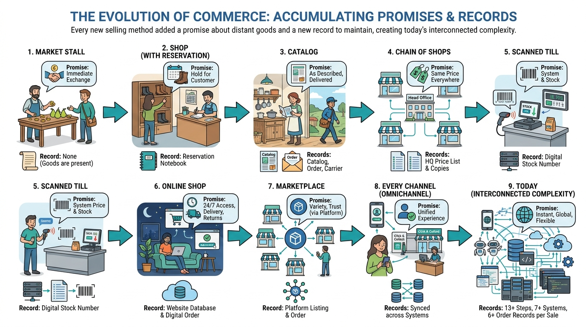

Preface
From Market Stall to Marketplace: How Selling Got This Complicated
AI-assisted: researched and written with Claude Code and Codex; illustrations generated with Gemini and OpenAI image tools. How this works

Image generated by Google Gemini (gemini-3-pro-image-preview)